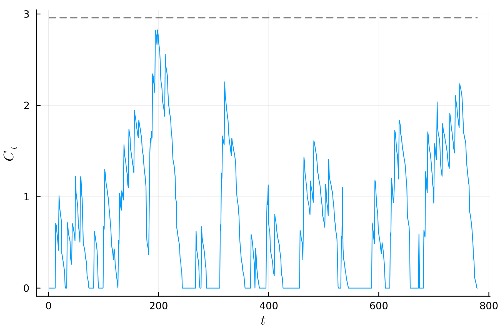

Monitoring Surgical Outcomes Using a Risk-Adjusted CUSUM Chart
In this example, we demonstrate the use of a risk-adjusted CUSUM chart. The data comes from a center for cardiac surgery in the UK and is available in the cardiacsurgery.csv file at this Zenodo link.
First, the required packages are loaded
using StatisticalProcessMonitoring, Distributions, Random, Parameters, CSV, DataFrames, CategoricalArrays, MixedModels, PlotsThe dataset is then loaded as a DataFrame and the surgeon variable is categorized.
julia> dat = CSV.read("cardiacsurgery.csv", DataFrame)
julia> dat.surgeon = categorical(dat.surgeon)We divide the data into Phase I (first two years) for model estimation and Phase II (following year) for prospective monitoring.
julia> dat_ic = dat[dat.date .<= 730, :]We estimate the post-operative mortality rate on the Phase I data using a logistic regression model with the Parsonnet score as a covariate and the surgeon as a random intercept.
julia> using MixedModels
julia> mod = fit(MixedModel, @formula(status ~ Parsonnet + (1|surgeon)),
dat_ic, Bernoulli())
julia> print(mod)
Generalized Linear Mixed Model fit by maximum likelihood (nAGQ = 1)
status ~ 1 + Parsonnet + (1 | surgeon)
Distribution: Bernoulli{Float64}
Link: LogitLink()
logLik deviance AIC AICc BIC
-388.8235 777.6471 783.6471 783.6607 800.0816
Variance components:
Column Variance Std.Dev.
surgeon (Intercept) 0.037837 0.194518
Number of obs: 1769; levels of grouping factors: 6
Fixed-effects parameters:
─────────────────────────────────────────────────────
Coef. Std. Error z Pr(>|z|)
─────────────────────────────────────────────────────
(Intercept) -3.65655 0.17509 -20.88 <1e-96
Parsonnet 0.0818093 0.00723527 11.31 <1e-28
─────────────────────────────────────────────────────For Phase II monitoring, we consider data from the following year.
julia> dat_oc = dat[730 .< dat.date .<= 1095, :]We use a risk-adjusted CUSUM control chart to monitor potential increases in post-operative patient mortality.
julia> Random.seed!(239184367)
julia> STAT = RiskAdjustedCUSUM(Δ = 0.75, model = mod, response = :status)We set the IC average run length to 1000 and initialize the control limit.
julia> NOM = ARL(1000)
julia> LIM = OneSidedFixedLimit(1.0, true)In-control run lengths for estimating the control limit are simulated by resampling the Phase I data using bootstrap.
julia> PH2 = Phase2(Bootstrap(), dat_ic)After creating the ControlChart object, we find the control limit using stochastic approximations.
julia> CH = ControlChart(STAT, LIM, NOM, PH2)
julia> h = saCL!(CH, verbose = true, gamma = 0.05)
Running SA ...
Running adaptive gain ...
Estimated gain D = 0.4117860274331409
Running optimization ...
i: 0/50000 h: 2.77856 hm: 0.0 stop: 0
i: 1000/50000 h: 2.86375 hm: 2.9541 stop: 3457
i: 2000/50000 h: 2.94813 hm: 2.95045 stop: 3435
i: 3000/50000 h: 2.92253 hm: 2.95877 stop: 3420
i: 3359/50000 Convergence!
(h = 2.9568877844997226, iter = 3359, status = "Convergence")We apply the control chart to the Phase II data and plot the results of the monitoring.
julia> proc = apply_chart(CH, dat_oc)
julia> plt = plot_series(proc, dpi = 300, label = "", xlab = L"t",
ylab = L"C_t")